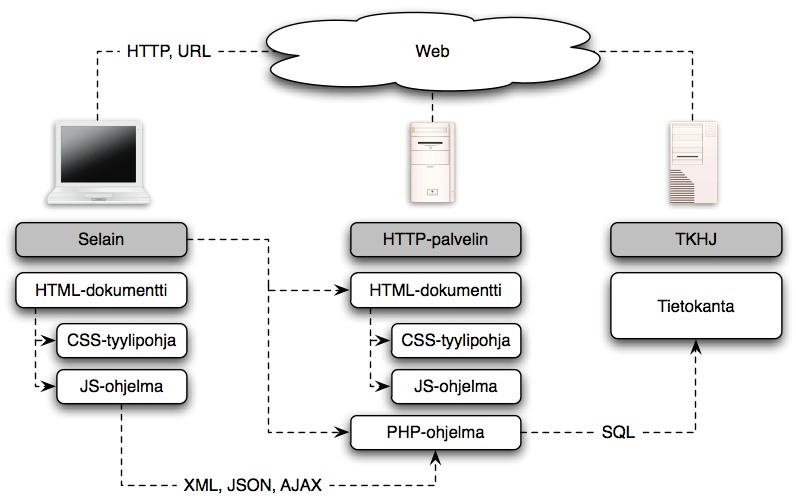

Johdatus web-ohjelmointiin
Web-ohjelmointi on aihepiirinsä johdantokurssi, joka käsittelee ohjelmoijan näkökulmasta web-sovelluksissa käytettyjä perustekniikoita kuten HTML1, CSS2, JavaScript, PHP3 ja SQL4. Kurssin keskeisiä työvälineitä ovat Firefox -selain ja integroitu sovelluskehitysympäristö, NetBeans IDE5. Esillä olevia tekniikoita voidaan jäsentää oheisella kaaviolla.

Web-sovellusten käyttöliittymänä toimii selain, joka tekee HTTP6-muotoisia pyyntöjä web-palvelimelle joko käyttäjän tai selaimen tulkitseman koodin ohjaamana. Tyypillinen vaste pyyntöön on HTML – dokumentti, joka voi sisältää myös CSS – määreitä ja JavaScript – koodia, joko suoraan tai viitteinä ulkopuolisiin tiedostoihin. HTML määrittelee dokumentin sisällön ja rakenteen CSS:n viimeistellessä dokumentin layoutin ja ulkoasun. JavaScript on selaimen tulkitsemaan ohjelmakoodia, joka voi muokata selaimen esittämää dokumenttia erityisen DOM7 – rajapinnan kautta. JavaScript osaa myös tehdä palvelimelle, tyypillisesti asynkronisia, HTTP – pyyntöjä, mihin viitataan usein lyhenteellä Ajax8.
Selain voi pyynnössään viitata staattisen HTML – dokumentin sijaan myös palvelimella sijaitsevaan ohjelmaan, joka suoritetaan pyynnön seurauksena. Tällä kurssilla palvelinpään ohjelmointikielenä on PHP. Sovellukseen voi liittyä myös tietokanta – esim. pyynnön vasteen muodostaminen tietokannassa olevan tiedon perusteella. Usein käytössä on relaatiotietokanta, jota käsitellään SQL:n avulla. Tässä käytetään esimerkkinä SQLite-relaatiotietokantaa. Kurssilla käytettävä web-palvelin on integroitu IDE:en ja toisaalta PHP-tulkkiin.
Kurssi on jaettu seitsemään osaan, joista kunkin ytimen muodostaa tiettyyn teemaan keskittyvä tehtäväsarja:
- HTML, CSS I
- CSS II, JavaScript
- PHP I
- PHP II
- Soveltavat tehtävät I
- Soveltavat tehtävät II
- Soveltavat tehtävät III
Kahden ensimmäisen osan lähtökohtana on Helsingin yliopiston Web-selainohjelmointi -kurssin alkuosa (materiaalista luvut 2-5). Osat 3 ja 4 muodostaa Viope -oppimisympäristön kurssi PHP -ohjelmoinnin perusteet. Osien 5-7 soveltavien tehtävien pääasiallisena lähteenä on Washintonin yliopiston Web Programming -kurssin materiaali.
Lisätietoja kurssista
Kurssin konteksti
Suorituksen arvostelu
Edellinen kurssitoteutus
sivusto täydentyy ja päivittyy kurssitoteutuksen edetessä